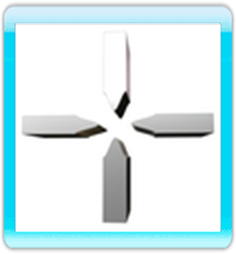
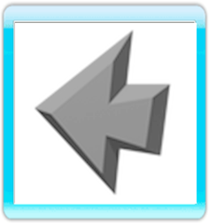
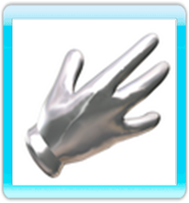

THE Wii REMOTE
All the actions of this game are executed with a Wii Remote. By moving it, the cursor will move about the screen, pointing out the different game options to the player. The cursor has four different icons, which show the different actions that you can do.
GO TO
The first icon is just an indicator, only useful to go to the place where it is pointing, any undetermined place of a room, a street or a field. To go to a particular place, the icon will be transformed in an arrow, then press the A Button.
LOOK
The second icon is a magnifying glass that only appears on particular objects and characters. The magnifying glass is used to look at things and, by pressing the A Button, Fenimore will get near to what you wish to see and the camera will change to a subjective zoom, allowing the player to see anything in detail.
USE
The third icon is a hand that is used to interact with the objects in the scenario. For example, on a door, the hand will indicate that you can open it, on a bucket that you can pick it up, on a horse, that you can ride it.
TALK
The forth icon is the speech balloon, that is used to talk to the other characters; therefore, it only appears on human characters. Once you have initiated a conversation, different options of speech will appear on the right part of the screen, represented with faces. There will also be an option to finish the conversation, represented with an arrow, and, sometimes you can select the icon of a folder to talk about a particular subject.
ICONS ROTATION
To change from one icon to another, from the magnifying glass to the hand or to the speech balloon, you have to press the B Button. When the cursor is on a particular object, whose name will appear in the bar of orders (the black band on the bottom of the screen), and you press the B Button, the icon changes from the magnifying glass, used to look at the object, to the hand, used to move it or picking it up.